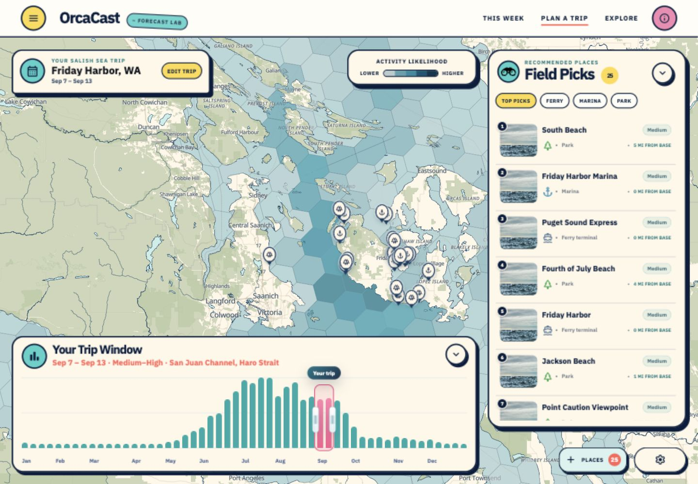
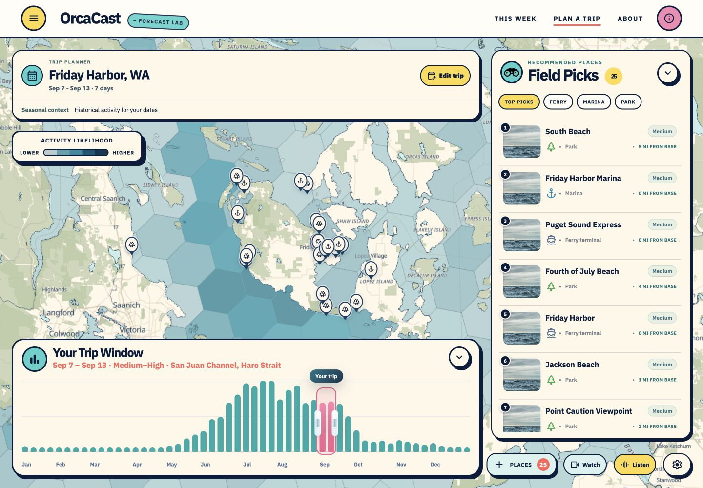
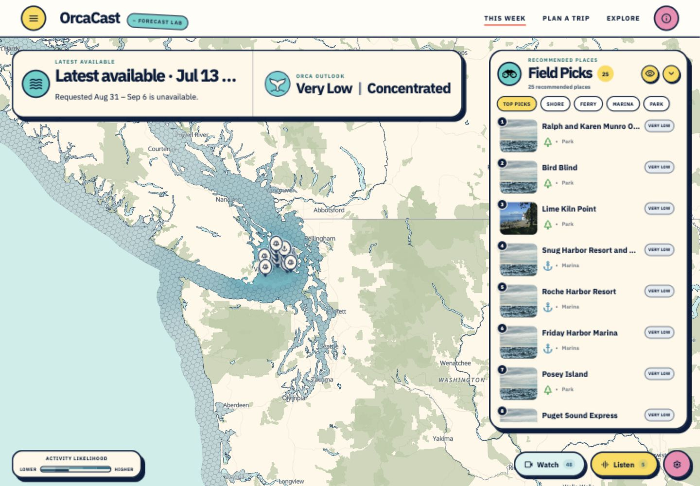
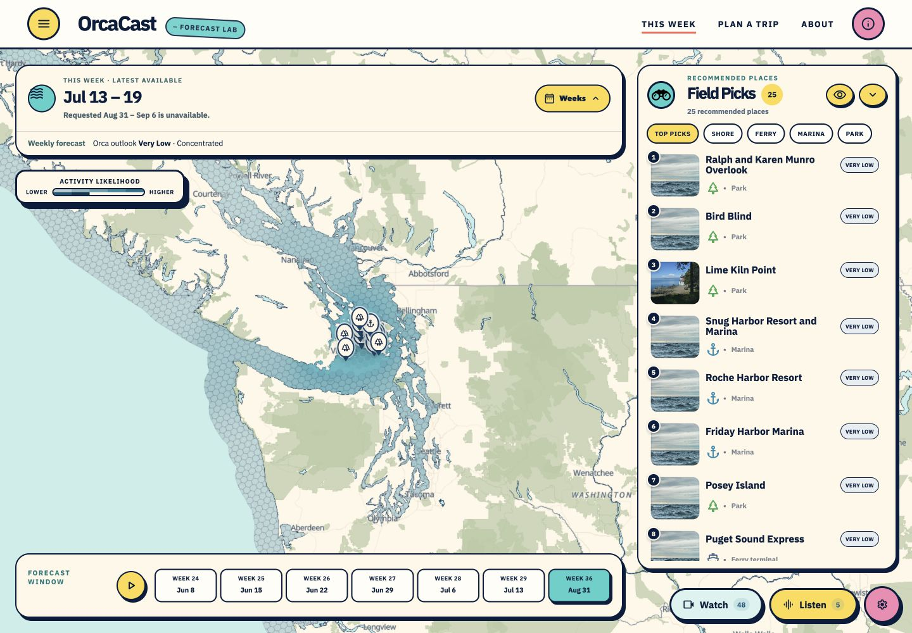
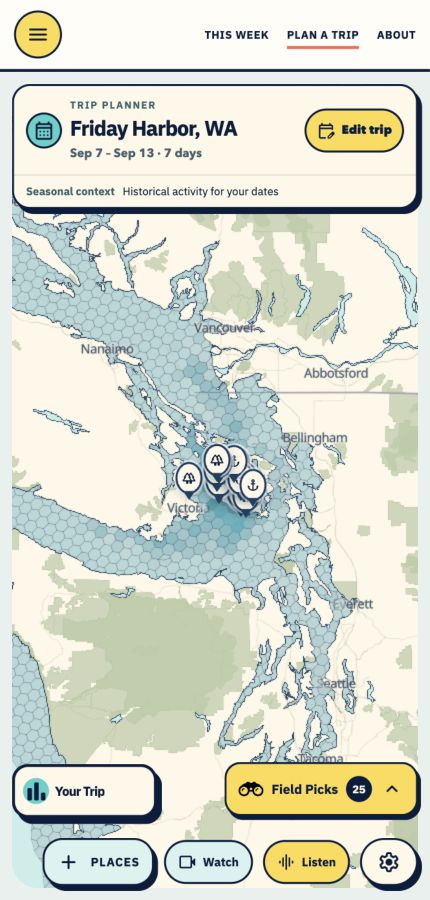
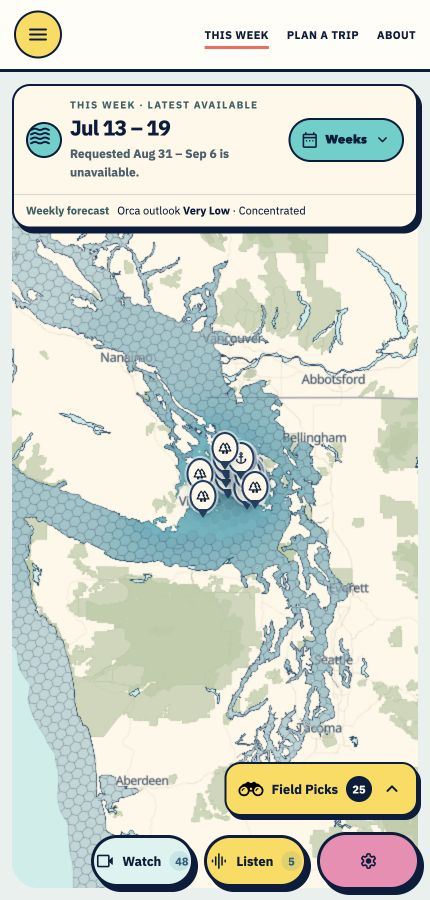
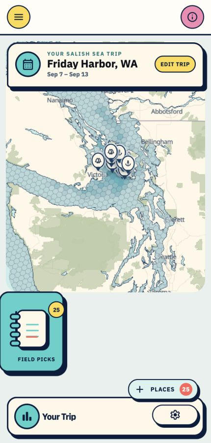
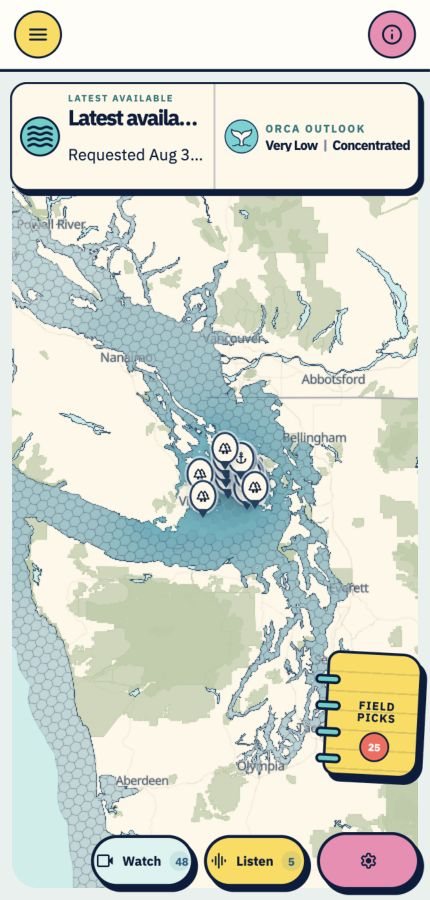
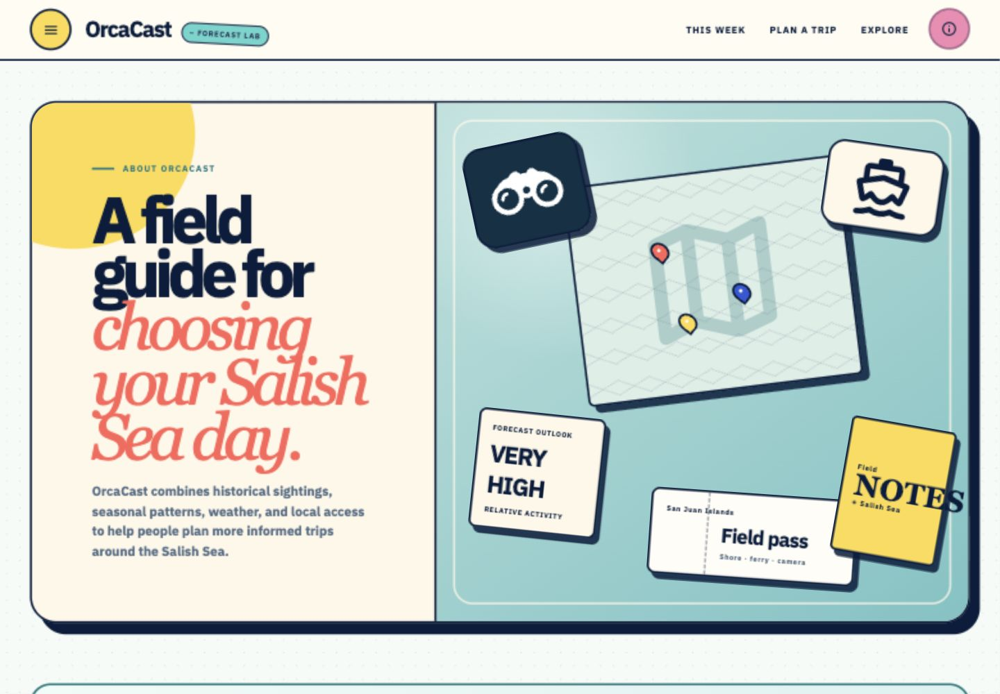

One OrcaCast workspace, two distinct questions
Planner helps visitors choose places around their dates, starting point
and travel range. This Week helps visitors explore a selected weekly
forecast. About explains the outlook, limitations and responsible use.
1. Planner — trip intent preserved
The base, date range, seasonal chart, field picks and itinerary remain.
The shared summary labels historical context explicitly. Watch and
Listen now have direct map shortcuts.
Before

After

2. This Week — forecast intent preserved
The forecast retains its selected dates, latest-available notice,
model/ecotype controls and playback. Weeks is now an explicit button;
desktop playback sits below the map, matching Planner's seasonal panel
position.
Before

After

3. Mobile — readable dates and familiar controls
Both pages expose the three primary destinations, preserve readable
dates and use the same compact Field Picks toggle. Seasonal context and
weekly forecasts retain distinct labels.
Planner

This Week

Planner before

This Week before

4. About — purpose and interpretation
About is now one of the three primary destinations. Its “See this week”
action now leads to the weekly forecast. The educational and
responsible-viewing content retains its purpose.

All reference images were captured from the local app during this review.
Different map extents and activity values are intentional: the sample
Planner trip and weekly forecast use different dates and data sources.